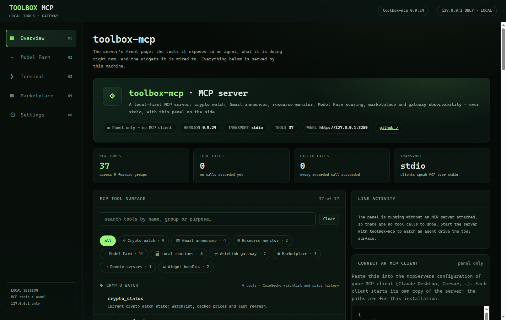

acsdd / toolbox-mcp
toolbox-mcp
A local-first MCP server: 37 tools for crypto watch, Gmail, resource monitoring, Model Farm scoring and the module marketplace — over stdio, with an ops panel on the side.
Released for acceptance testing outside the team.
Download the Model Farm app
Windows, no Node.js and no administrator rights. The binaries are not code-signed, so SmartScreen shows an "unverified publisher" warning on first start. Older builds: all releases. Verify a download with SHA256SUMS.txt.
Start in three steps
- Download and runUse the installer, or the portable executable if you prefer nothing installed.
- Open Model FarmThe window is the ops panel: Overview, Model Farm, Terminal and Marketplace.
- Connect your agent — optionalOpen Overview → Connect an MCP client and copy the generated configuration into Claude Desktop, Cursor or another MCP client.
Runs on
- Windows 10 or 11, x64.
- No Node.js and no administrator rights.
- Local models are optional — Ollama, LM Studio, llama.cpp and others are detected if present.
- A source checkout runs on Node.js 22+.
Private by default
- The server binds to 127.0.0.1 only and loads nothing from the network.
- No account, no telemetry and nothing uploaded.
- The Gmail App Password stays in the Windows credential store.
- Remote modules are opt-in, badged and limited to public HTTPS endpoints.

ReadmeWhat the project is and how to run it
ReleasesTags and downloadable builds
IssuesReport a problem or ask for something
SourceClone it and build from source
Install guide · MCP clients · Security · Contributing · MIT license
Toolbox family
- ArtistWaveA browser music workspace — artists, genres, playlists.
- Bartender AidA cocktail assistant: Expo phone app + Express backend.
- AudioWaveA self-contained Windows music player.
- ToolboxA local-first Windows toolbox in a single window.
- LlamaFarm CLIWhich local models fit this machine, and how to run them.
- toolbox-mcpA local-first MCP server with a localhost ops panel.
- toolbox-nasA local-first NAS companion for the shared widgets.
- @toolbox/widgetsThe shared widget core of the Toolbox family.